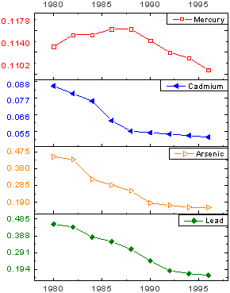
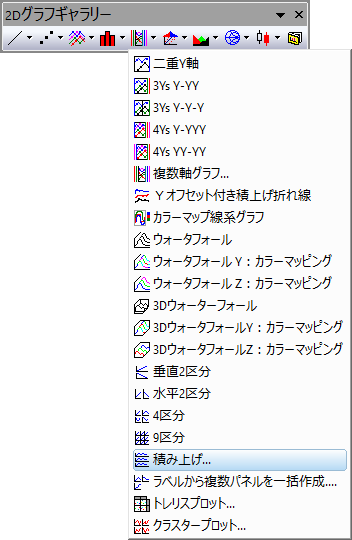
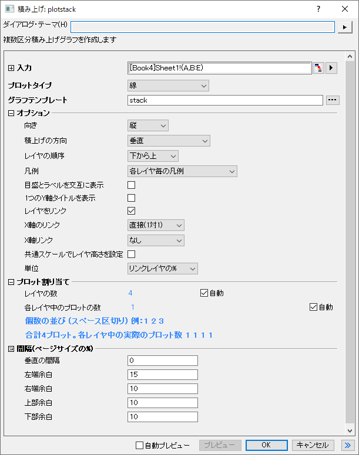
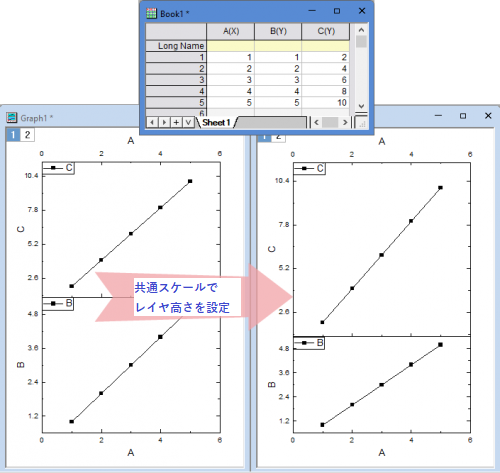
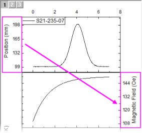

積み上げグラフ
Stack-Panels-Graph

要求されるデータ
最低1つのY列あるいは、その部分領域を選択します。理想的には、少なくとも2つのY列、または少なくとも2つのY列の範囲を選択します。関連付けられたX列がある場合はそれを使用し、そうでない場合は、Y列のサンプリング間隔または行番号が使用されます。
グラフ作成
データを選択します。
を選択します。
または
2Dグラフギャラリーツールバーの積み上げパネルボタンをクリックします。

これによりplotstackダイアログが開きます。

このダイアログでオプションをカスタマイズし、OKをクリックしてプロットを作成します。
テンプレート
STACK.OTP（Originのプログラムフォルダにインストールされています）
ノート
- この積み上げグラフをプロットするときは、Xファンクションplotstackを使用します。
- 積上げの方向オプションで垂直または水平を選択してグラフレイヤを積み上げます。
- 水平方向の場合は、水平（X・Y軸の交換）と水平の2つのオプションがあります。ここで、グラフのXとY軸を交換して積上げるかどうかを指定できます。一方で水平オプションは向き = 横にするとうまく動作します。
- 単一X列を含むワークシートを選択したとき、各Y列はデフォルトで個別のレイヤにプロットされます。しかし、プロット割り当ての項目を開き、自動のチェックを外してレイヤの数と各レイヤ中のプロットの数（スペース区切りで入力）を指定することもできます。
- 複数のX列を含むワークシートデータを選択した場合、デフォルトでは、レイヤの数 = X列の数になり、各Y列が一番近いXデータに対してプロットされます。単一X列の場合と同じように、自動のチェックを外してレイヤとプロットの構成を指定することもできます。このタイプのグラフは、X列の数がレイヤの数より多い場合はサポートしていません。
- ワークシートデータは、左端の列から右に移動して、下から上へ（下にレイヤ1、上にレイヤ2などのように）プロットされます。
- 各子レイヤのX/Y軸は、レイヤ1のX/Y軸との直接(1対1)のリンクを持つことができます。
- グラフウィンドウの統合ダイアログの共通スケールでレイヤ幅/高さを設定オプションと同様に、すべてのレイヤのレイヤ高さを共通スケールで設定できます。

- 軸のタイトルには、関連付けられているワークシートの列名が表示されます。 積上げの方向が垂直または水平(X・Y軸の交換)の場合、1つのY軸タイトルを表示 にチェックを付けると、Y軸タイトルの表示を1つだけにできます。積上げの方向が水平の場合、1つのX軸タイトルを表示にチェックを付けると、X軸タイトルの表示を1つだけにできます。
- 目盛とラベルを交互に表示のチェックボックスで各レイヤの目盛ラベルを交互に表示します (垂直だけでなく各積上げの方向で利用可能です) 。

- 積上げの方向が垂直の場合、垂直の間隔が2以下のときは最初のレイヤのみX軸を表示します。積上げの方向が水平または水平(X・Y軸の交換)の場合、水平の間隔が2以下のときは最初のレイヤのみ垂直方向の軸を表示します。